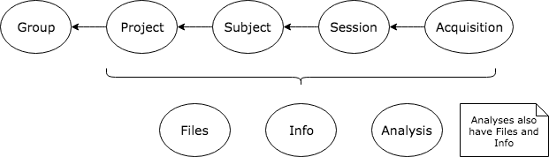

Data Model¶
Hierarchy¶
Data in a Flywheel system is organized in a tree-like hierarchy, as indicated in the following diagram.
User- An authorized entity, usually referenced by email address.Group- A grouping of users and projects.Project- A project represents a grouping of subjects and sessions, e.g. within a study.Subject- An individual under study.Session- A grouping of acquired data, typically data acquired within a limited timeframe.Acquisition- A set of one or more files, typically acquired as part of the same process, at the same time.AnalysisOutput- A set of one or more derivative files from analyzing files after they have been acquired.
Permissions¶
Permissions in Flywheel are managed at the Group and Project level. Users that belong to a Group or a Project have a Role, which is one of:
- Admin (
admin) - Administrators can perform administrative-level actions such as setting permissions or creating and deleting projects. - Read-Write (
rw) - Users can read, create and delete data, but cannot assign permissions or delete entire projects. - Read-Only (
ro) - Users can only read data
By default when a new Project is created belonging to a Group, permissions will be copied from the Group to the Project, keeping user roles intact. From that point on, permissions for that Project must be managed at that project, changes made to the Group will not propagate to the project.
# See project permissions
project = fw.getProject(projectId);
disp(project.permissions{1});
# Add permission to a project
fw.addProjectPermission(projectId, flywheel.model.Permission('id', 'justinehlert@flywheel.io', 'access', 'ro'));
# Remove permission from a project
fw.deleteProjectUserPermission(projectId, 'justinehlert@flywheel.io');
Containers¶
Projects, Subjects, Sessions, Acquisitions and Analyses are all different types of Containers. Containers in Flywheel all support the following features:
Tags¶
Tags are concise labels that provide descriptive metadata that can be searched on. Available tags are managed on the Group.
# See tags on a session
session = fw.getSession(sessionId);
fprintf('%s\n', strjoin(session.tags, ', '));
# Add a tag to a session
fw.addSessionTag(sessionId, 'Control');
# Remove a tag from a session
fw.deleteSessionTag(sessionId, 'Analysis Required');
Notes¶
Notes are user-entered, human readable metadata attached to a container. They are timestamped and attributed to the user that entered them.
# See notes on a session
session = fw.getSession(sessionId);
disp(session.notes{1});
# Add a note to a session
fw.addSessionNote(sessionId, 'This is a note');
# Delete a note from a session
fw.deleteSessionNote(sessionId, session.notes{1}.id);
Info¶
Info is free-form JSON metadata associated with a container or file.
# Print the info for an acquisition
acquisition = fw.getAcquisition(acquisitionId);
disp(acquisition.info);
# Replace the entire contents of acquisition info
fw.replaceAcquisitionInfo(acquisitionId, struct('splines', 34));
# Add additional fields to acquisition info
fw.setAcquisitionInfo(acquisitionId, struct('curve', 'bezier'));
# Delete fields from acquisition info
fw.deleteAcquisitionInfoFields(acquisitionId, {{'splines'; 'bezier'}});
Files¶
Files are a set of file attachments associated with a container. See also Dealing with Files.
# List files on an acquisition
acquisition = fw.getAcquisition(acquisitionId);
for idx = 1:numel(acquisition.files)
fprintf('Name: %s, type: %s\n', acquisition.files{idx}.name, acquisition.files{idx}.type);
end
# Upload a file to an acquisition
fw.uploadFileToAcquisition(acquisitionId, '/path/to/file.txt');
# Download a file to disk
fw.downloadFileFromAcquisition(acquisitionId, 'file.txt', '/path/to/file.txt');
# Files can also have metadata
disp(acquisition.files{1}.info);
fw.replaceAcquisitionFileInfo(acquisitionId, 'file.txt', struct('wordCount', 327));